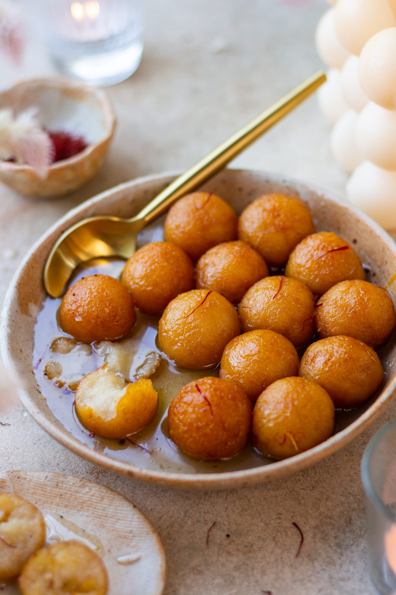

Gulab Jamun

Description
Gulab jamun is a popular sweet dish in India.
It is a doughball that is fried and covered in a sugar syrup infused with saffron.
It comes in many different shapes and sizes. Sometimes, it is cylindrical and covered in granulated sugar, while others are as seen in the image.
Ingredients:
- milk powder, unsweetened
- maida / plain flour
- baking powder
- ghee / clarified butter
- milk
- sugar
- water
- cardamom
- saffron / kesar
- lemon juice
- rose water
Steps
- Firstly, in a large bowl take ¾ cup milk powder, ½ cup maida and ½ tsp baking powder.
- Mix well, homemade gulab jamun mix is ready.
- Now add 2 tbsp ghee and mix well making the flour moist.
- Further, add milk as required start to combine.
- Combine well forming a soft dough. do not knead the dough.
- Cover and rest for 10 minutes.
- meanwhile, prepare the sugar syrup by taking 2 cup sugar, 2 cup water, 2 cardamom and ¼ tsp saffron.
- mix well and boil for 5 minutes or until the sugar syrup turns sticky. do not attain any string consistency.
- turn off the flame and add 1 tsp lemon juice and 1 tsp rose water. lemon juice is added to prevent sugar syrup from crystallizing.
- cover and keep the sugar syrup aside.
- after 10 minutes or resting the dough, start to prepare small ball sized jamuns.
- make sure there are no cracks in the jamun. if there are cracks then there are high chances for jamuns to break while frying.
- deep fry in medium hot oil or ghee. frying in ghee gives good flavour to jamuns.
- stir continuously and fry on low flame.
- fry until the jamuns turn golden brown.
- drain off and transfer the jamun into a hot sugar syrup.
- cover and rest for 2 hours or until jamuns absorb the sugar syrup and doubles in size.
- finally, enjoy gulab jamun with ice cream or as it is.
Thank You!!